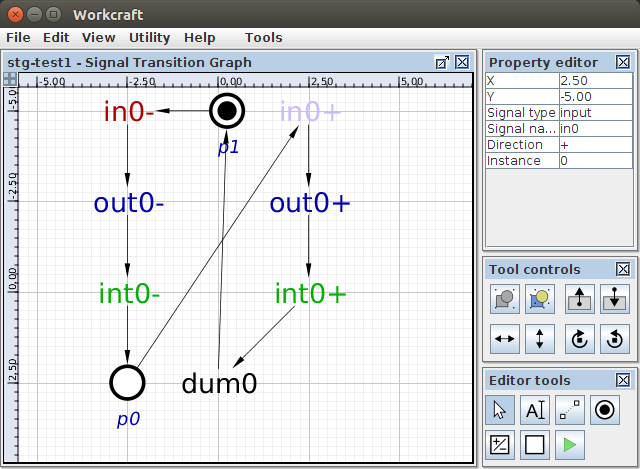

Table of Contents
Signal Transition Graph plugin
Familiarise yourself with Workcraft interface to learn its common features that are available for all plugins.
This plugin is intended for capturing, simulation and verification of Signal Transition Graphs (STGs), that is a special kind of Petri nets whose transitions are associated with signal events.
Capturing
In order to create an STG model choose File→Create work… menu item. In the New work dialogue box select Signal Transition Graph as the model type. You may also want to give the work a meaningful name, e.g. stg-test1, otherwise it will be created under Untitled name. Click OK or press Enter to create the work.

To capture an STG you just put its places and transitions on the editor pane and connect them by means of arcs. Creation of places is similar to that of Petri net plugin, by using the place generator ![[P] Place](editor_tools-place.png "[P] Place") . However, the creation of transitions is a bit more complicated as there are two classes of transitions in this plugin with their respective node generator tools:
. However, the creation of transitions is a bit more complicated as there are two classes of transitions in this plugin with their respective node generator tools:
![[T]Signal Transition](editor_tools-signal_transition.png "[T]Signal Transition") - signal transition generator
- signal transition generator
- a tool for creating signal transitions with their rising and falling phases (denoted by+and-respectively after the signal name). This tool can also be activated by pressing T.![[D]Dummy Transition](editor_tools-transition.png "[D]Dummy Transition") - dummy transition generator
- dummy transition generator
- a tool for creating dummy transitions that do not belong to any signal and do not have rising or falling phase, but rather are used to simplify the structure of the STG. This tool can also be activated by pressing D.
Three types of signal transitions are supported denoting the input, output and internal events. By default a falling phase of an output signal is created (usually the automatically generated name is out0-) when you click the editor panel. This behaviour can be changed by holding Shift and/or Ctrl keys while creating a signal transition as follows:
- Shift - rising phase of an output signal (usually
out0+). - Ctrl - falling phase of an input signal (usually
in0-). - Ctrl+Shift - rising phase of an input signal (usually
in0+).
The internal signals are less frequently used and therefore their is no key combination for them. Instead you need to create an output transition first, then rename it and finally change its signal type in the property editor. Note that renaming of the transition before changing its type is important as otherwise all transitions with the same signal name will change their type.
If no model elements are selected, then the property editor shows the attributes of the whole model. In case of STG these are the names and types of all the signals. This is the good place to change the signals' names, so that all transitions of a renamed signal see the modification.

The STG transitions can be easily recognised by their color. By default the input transitions are red, output - blue, internal - green and dummies are black. This color scheme can be changed in the global settings under the Models→Signal Transition Graph leaf of the preferences tree (accessible via Tools→Preferences… menu item).

The automatic naming for the signal transitions is as follows. A transition is given in or out prefix depending on the type of the signal it represents – input or output respectively. Then a numerical suffix is added to the name, starting from 0. If a transition of the same signal already exists, then its type is checked to match the intended type of a newly created transition. If there is a mismatch (e.g. we want to create an output transition out- but a transition of an input signal exists that has an ambiguous name out0+) then the numerical suffix is incremented until a new transition of intended type can be created without causing a conflict.
Note that in order to distinguish transitions of the same signal and the same polarity they are assigned instance numbers that are separated from the label by / symbol. Therefore two rising transitions of a signal out0 have different instance number, e.g. 0 and 1 and their full names are out0+/0 and out0+/1 respectively. The instance numbers are automatically generated to be unique among transitions of the same phase and of the same signal. Usually the instance numbers do not need to be changed and therefore, for simplicity, they are even hidden in the editor panel. However, the instance number of a transition can be seen and altered if necessary in the property editor.
When the connection tool ![[C] Connect](editor_tools-connect.png "[C] Connect") is active you can connect places and transitions with arcs by first click the source node and then the destination node. If you hold Ctrl then the destination node becomes a source for the next arc making it easier to form a sequence of connected nodes.
is active you can connect places and transitions with arcs by first click the source node and then the destination node. If you hold Ctrl then the destination node becomes a source for the next arc making it easier to form a sequence of connected nodes.
Note that places can only be connected to transitions. If you attempt to connect two places, then a warning will be issued that connections is not valid. However unlike Petri nets, the STG transitions can be connected to each other without an explicit place in between. This shorthand notation is used when a place has a single transition in its preset and a single transition in its postset. For simplicity such a implicit place is hidden and an arc is drawn directly between two transitions.

Editing
For editing the model activate the selection tool ![[S] Select](editor_tools-select.png "[S] Select") . All the standard editing features (select, drag-and-drop, delete, copy, undo, group, etc.) work the same - see generic help on Selection controls and Property editor for details.
The only new feature is double clicking on a place:
. All the standard editing features (select, drag-and-drop, delete, copy, undo, group, etc.) work the same - see generic help on Selection controls and Property editor for details.
The only new feature is double clicking on a place:
- Double-click on an empty place to mark it with a token.
- Double-click a place marked with a token to remove the token.
- If a place has more than one token then double-clicking does not have any effect.
The attributes of an implicit place, e.g. the number of tokens or its capacity, can be modified in the property editor of a corresponding arc connecting two transitions. The signal name, phase and instance number of a transition can be changed in the property editor when the transition is selected.

Similar to all the other models, textual comments can be created by activating the ![[N] Text Note](editor_tools-text_note.png "[N] Text Note") tool and clicking the editor panel in the position you want to put the text. Double-click on the note box to edit its text label in-place or do it through the property editor panel when the note is selected.
tool and clicking the editor panel in the position you want to put the text. Double-click on the note box to edit its text label in-place or do it through the property editor panel when the note is selected.
Simulation
For simulation of an STG model activate the simulation tool ![[M] Simulate](editor_tools-simulate.png "[M] Simulate") . The enabled transition are highlighted and can be fired by clicking them. The simulation tool controls provide the means for analysis and navigation through the simulation trace, see generic help on Simulation controls for details.
. The enabled transition are highlighted and can be fired by clicking them. The simulation tool controls provide the means for analysis and navigation through the simulation trace, see generic help on Simulation controls for details.
Note that the simulation controls are extended with the signal state table. The first column of the table lists all the signals of the STG while the second column captures the current state of each signal. The state of a signal is determined only by the phase of its last transition in the simulation trace. If the last was the signal's rising transition, then the state is 1; if it was a falling transition, then the state is 0. If no transition of a signal has happened yet, then its state is considered unknown and is denoted by a question mark ?. If a signal is excited (i.e. its transition is currently enabled) then its current state is in emphasised by bold font (1, 0, or ?).

Verification
A number of STG properties can be verified via Tools→Verification menu.
- Check for CSC [MPSat] - verify the STG has Complete State Coding (CSC).
- Check for USC [MPSat] - verify the STG has Unique State Coding (USC).
- Check for consistency [MPSat] - verify that STG signals are consistent (rising and falling transitions of the same signal alternate in all possible traces).
- Check for deadlocks [MPSat] - verify if the STG is deadlock-free.
- Check for normalcy [MPSat] - check the normalcy property of the STG.
- Check for output persistence (without dummies) [MPSat] - verify the output signals of the STG are persistent (once enabled they do not get disabled until fired).
- Custom properties[MPSat]… - custom properties can be verified through formulation a reachability analysis problem using Reach language in a specialised MPSat configuration window.
If the verified property is not satisfied, then a trace (or a family of traces) leading to the violation is reported. The trace can be passed to the simulation tool (by clicking the Play button) for playback and analysis of the reasons leading to the violation.

Synthesis
The STG specification can be synthesised into Boolean equations by using Petrify or MPSat as backend tools:
- Petrify is a tool for synthesis of Petri nets and asynchronous controllers. It explicitly enumerates all states reachable by the specification, encodes them with the vectors of signal values and derives the Boolean equations for the output signals. The full state space exploration limits the applicability of this tool to relatively compact asynchronous controllers (up to few dozens of signals). Apart from logic synthesis, Petrify is also capable of hazard-free decomposition and technology mapping of its solution into the library of available gates.
- MPSat is a model checking and synthesis system that uses Petri net unfoldings as a means to avoid the explicit representation of the specification state space. It relies on SAT solver for the synthesis and verification tasks. MPSat does not (fully) support decomposition and technology mapping yet. On the other hand, MPSat enables verification of several predefined model properties (deadlock, CSC, USC, normalcy) and provides a Reach language to verify custom properties.
These synthesis options are available under the Tools→Synthesis menu:
- Complex gate synthesis [MPSat] - synthesise the STG in complex gates using MPSat backend tool.
- Complex gate synthesis [Petrify] - synthesise the STG in complex gates using Petrify backend tool.
- Generalized C-element synthesis [Petrify] - synthesise the STG in generalised C-elements using Petrify backend tool.
- Technology mapping synthesis [Petrify] - synthesise the STG for a library of available gates using Petrify backend tool. The library of gates can be specified in the under External tools→Petrify leaf of the global preferences tree (available via Edit→Preferences menu).
Here is an example of synthesising a basic specification of an inverter with Petrify (equations on top of the Output window) and with MPSat (equation at the bottom of the Output window).